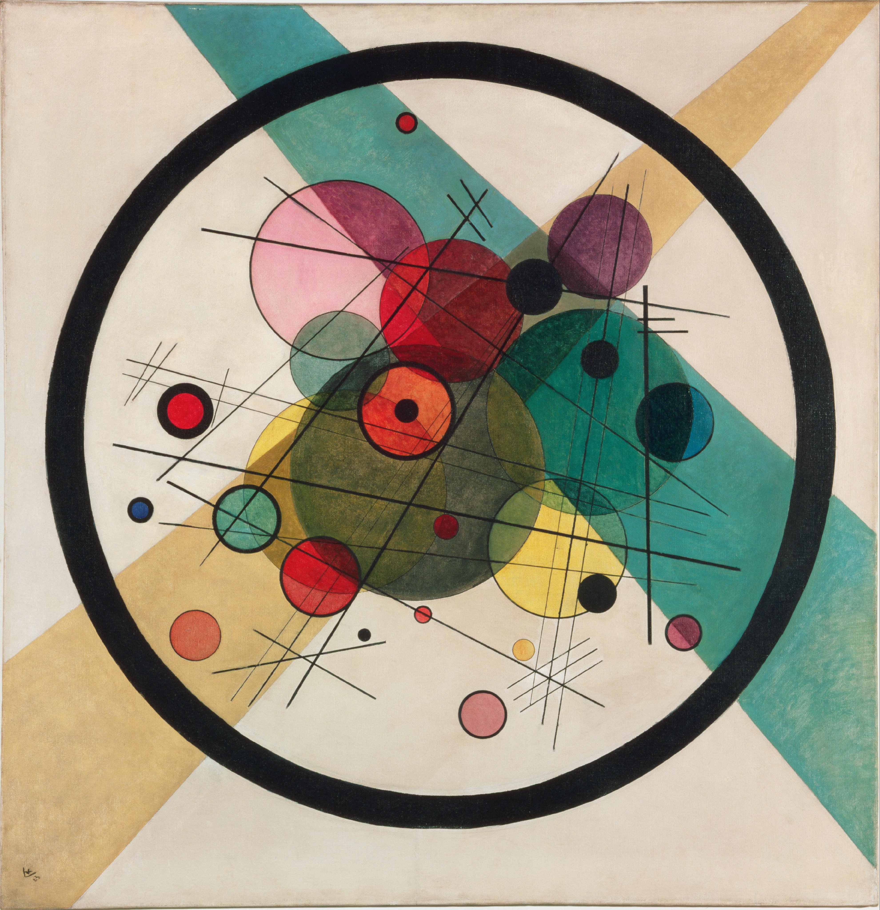
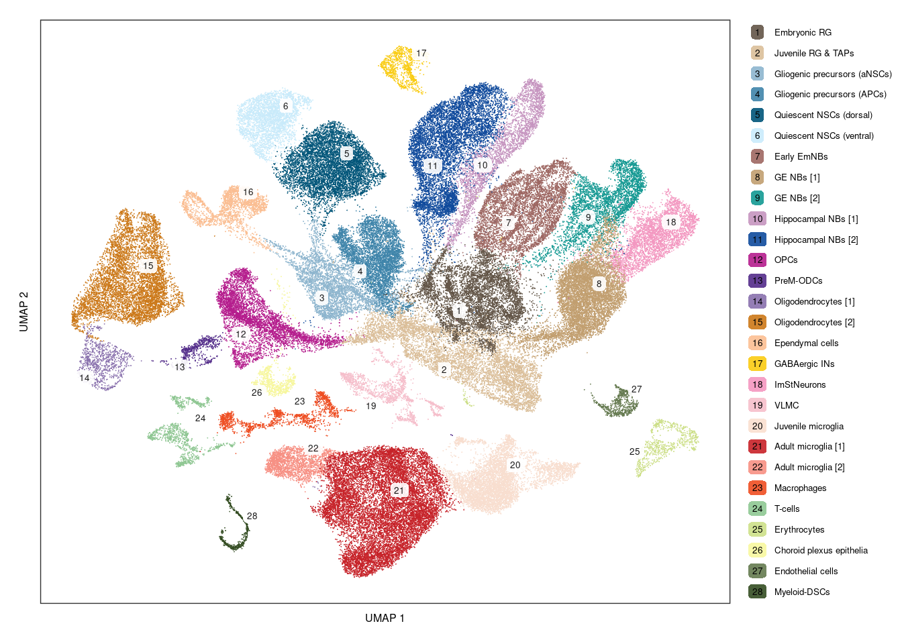
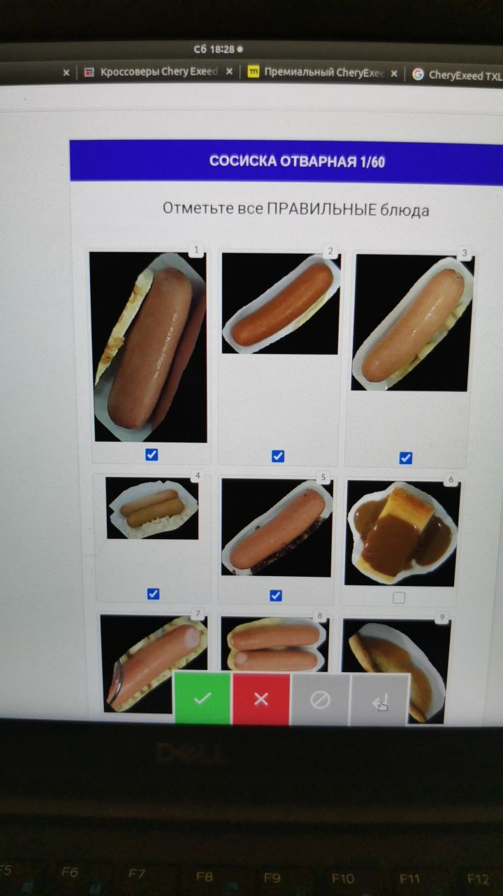
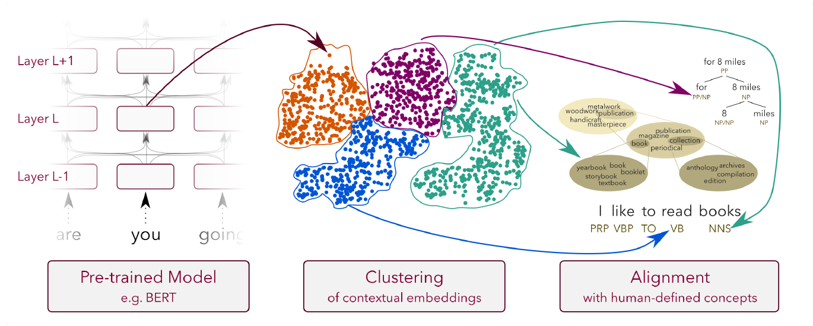

Кластеризация
Обучение без учителя
Постановка задачи, расстояния

Василий Кандинский · «Круги в круге», 1923Philadelphia Museum of Art
На обложке — «Круги в круге» Василия Кандинского (1923). Репродукция: Wikimedia Commons , public domain.
Задачи машинного обучения
Первая формула — минимизация эмпирического риска (без регуляризации): D — обучающая выборка, ℱ — допустимый класс моделей. Качество на новых данных оценивается отдельно. Например, ℓ(u,y)=(u−y)² для регрессии, ℓ(u,y)=1[u≠y] для жёсткой классификации. Вторая формула — пример оптимизационной постановки кластеризации при фиксированном K, а не универсальная формула всего обучения без учителя. Критерий Q пока не выбран; позже для k-means им будет сумма квадратов. Не каждый алгоритм явно оптимизирует Q. Третья формула — конечный горизонт из T действий в марковской среде. Ожидание учитывает начальное состояние, случайность переходов и стратегии. Π — допустимые стратегии (в том числе с зависимостью от времени), r_t — награда за действие на шаге t. При γ=1 будущие награды не дисконтируются. Время можно включить в состояние. Источники: Shalev-Shwartz, Ben-David, Understanding Machine Learning, §2.2: https://www.cs.huji.ac.il/~shais/UnderstandingMachineLearning/understanding-machine-learning-theory-algorithms.pdf RL: https://spinningup.openai.com/en/latest/spinningup/rl_intro.html
Что такое кластер
Кластер — группа объектов, похожих друг на друга в выбранном смысле.
Близость к общему центру Точки кластера находятся
Связность через соседей Точки образуют плотную связную область.
Левый рисунок иллюстрирует модель компактного кластера, правый — связность через цепочку соседей. У кольца противоположные точки далеки, но принадлежат одной связной области. Поэтому определение через «все попарные расстояния малы» не подходит для всех методов. Оба примера синтетические.
Постановка задачи кластеризации
Дано: n объектов, описанных d признаками.
Найти: разбиение индексов объектов на непустые группы.
Метка
Какие объекты считать похожими, задают признаки,
Один цвет — один кластер.
Множества S содержат индексы, поэтому совпадающие по координатам объекты остаются разными элементами выборки. K в этой постановке может быть задан или найден методом. Источник терминологии: https://en.wikipedia.org/wiki/Cluster_analysis#Definition
Зачем нужна кластеризация
Кластеризация помогает обнаружить структуру данных, о которой мы заранее не знаем.
Группы — способ увидеть эту структуру:
Разбиение само по себе — ещё не результат исследования. Мы ищем закономерности, которые помогут понять данные или решить прикладную задачу. Кластеризация может как открыть неизвестную структуру, так и уточнить уже имеющуюся гипотезу.
Пример 1: атлас клеток переднего мозга мыши

Источник: Ben Simons Lab · Mouse forebrain atlas Точка — отдельная клетка.
Клетки с похожими профилями объединяют в группы и определяют их биологический смысл.
Цвет — популяция клеток.
UMAP переносит данные на плоскость для визуализации. Группы здесь найдены методом Leiden.
Атлас клеток переднего мозга мыши из Ben Simons Lab. На рисунке 28 аннотированных популяций. Источник изображения и кода анализа: https://bensimonslab.github.io/mouse-forebrain-atlas/figure1.html#cluster-annotation Исходное изображение: https://bensimonslab.github.io/mouse-forebrain-atlas/figure/figure1.Rmd/unnamed-chunk-13-1.png Цвета — аннотации кластеров Leiden; UMAP используется для визуализации. Биологические названия присваивают после анализа маркеров, а не получают автоматически из номера кластера. Оси UMAP не являются отдельными генами; расстояния на рисунке не воспроизводят все расстояния в исходных данных.
Пример 2: группы поисковых запросов
Разные формулировки могут выражать похожую потребность.
«как сварить рис»
Приготовление еды
«билеты москва казань»
Покупка билетов
«не включается ноутбук»
Проблемы с ноутбуком
Объект: запрос. Признаки: векторное представление текста.
Запросы и разбиение придуманы для иллюстрации, это не результаты реальной поисковой системы. Текст можно представить числовым вектором, отражающим его содержание — эмбеддингом. Кластеризация объединяет близкие векторы; названия групп интерпретирует человек. Это отличается от классификации запросов по заранее размеченным категориям. При другом уровне детализации билеты на поезд и самолёт могут оказаться в разных группах.
Пример 3: разметка изображений еды
Задача: разметить изображения еды.
Представляем изображения векторами признаков и собираем похожие в группы.
Человек просматривает группу, задаёт общую метку и исключает неподходящие изображения.
Кластеризация предлагает группы.

Из практики преподавателя · разметка изображений еды
Фотография предоставлена преподавателем. На ней интерфейс проверки изображений, а не визуализация самих кластеров. Описан общий способ применять кластеризацию при разметке; конкретный алгоритм и модель признаков в этом проекте не указаны. Показать неподходящее блюдо в середине правого столбца: группа может содержать ошибки, поэтому автоматическое объединение не заменяет проверку человеком. Фотография на слайде показана с кадрированием; по нажатию открывается оригинал.
Пример 4: интерпретируемость языковых моделей
Какие понятия отражаются во внутренних представлениях модели?

Sajjad et al., 2022 · Analyzing Encoded Concepts in Transformer Language Models · Figure 1 ConceptX: группы представлений Кластеризуем векторы слов в контексте. Затем исследуем, что объединяет слова внутри группы: форму, грамматику или смысл.
Towards Monosemanticity: признаки Разлагаем активации в разреженную комбинацию признаков. Некоторые реагируют на ДНК, юридический текст или HTTP-запросы.
Общая мотивация — открыть интерпретируемую структуру пространства представлений. ConceptX применяет агломеративную иерархическую кластеризацию контекстных представлений слов из слоёв предобученных трансформеров, включая BERT. Изображение — оригинальная Figure 1 с с. 3083, извлечённая без изменения содержания: https://aclanthology.org/2022.naacl-main.225.pdf Не приписывать рисунок работе Anthropic. Это две разные работы и разные методы. Towards Monosemanticity изучает небольшой однослойный трансформер: разреженный автоэнкодер извлекает более 4000 признаков из активаций слоя с 512 нейронами. Один вектор может включать несколько признаков; это не жёсткая кластеризация. Источник: https://www.anthropic.com/research/towards-monosemanticity-decomposing-language-models-with-dictionary-learning
Подходы к кластеризации
Методы различаются тем, какую структуру считают кластером.
По центрам
Точки близки к общему представителю.
k-means, k-medoids
Иерархический
Группы вложены друг в друга;
Агломеративная
По плотности
Плотные области отделены
DBSCAN, HDBSCAN
Вероятностный
Данные порождены смесью
Gaussian Mixture Model
На графах
Внутри группы связи сильнее,
Спектральная
Не требуется запоминать все названия. Вернуться к иллюстрации «Что такое кластер»: компактные облака и кольца требуют разных представлений о структуре. Иерархия описывает организацию результата и может сочетаться с другими подходами, например, HDBSCAN строит иерархию по плотности. Источник: https://scikit-learn.org/stable/modules/clustering.html#overview-of-clustering-methods
K-means: идея
Представляем каждую из K групп одним центром.
● объект ✚ центр кластера K = 3
Старт Задаём число групп K.
1. Собрать группы Каждую точку относим к ближайшему центру.
2. Передвинуть центры Для каждой группы берём средние координаты её точек — это новый центр.
Повторяем шаги 1–2, пока группы не перестанут меняться.
K задаём заранее, в отличие от некоторых других методов. Центр обычно не совпадает с конкретной точкой данных. В вырожденных случаях часть центров может остаться без точек; правило для пустого кластера будет в псевдокоде. Рисунок схематический, центры на нём вычислены как средние показанных точек.
K-means: целевая функция
J — сумма квадратов расстояний от точек до назначенных им центров.
Обозначения xᵢ — объект; aᵢ ∈ {1, …, K} — его метка.
Почему центр — среднее При фиксированных метках сумму квадратов
Назначение ближайшему центру и пересчёт среднего не увеличивают J.
Отделить математическую задачу оптимизации от способа её приближённого решения. Квадрат евклидовой нормы — сумма квадратов разностей координат. Для одной группы можно вспомнить среднее арифметическое. Формула центра предполагает непустой S_k. Источник: https://en.wikipedia.org/wiki/K-means_clustering#Description
K-means: псевдокод
input : X, C, max_iter
for t = 1, …, max_iter:
for i = 1, …, n:
for k = 1, …, K:
if |Sₖ| > 0:
for i = 1, …, n:
output : C, a
Обозначения X — n объектов.max_iter — лимит итераций.
Assignment step Центры фиксированы.
Update step Метки фиксированы.
Равные расстояния: выбираем меньший номер центра.
Адаптация Wikipedia · Cluster analysis · CC BY-SA 4.0 . Комментарии переведены; добавлена обработка пустого кластера, уточнён output.
Сохранена структура псевдокода из указанной пользователем статьи. Используем n и K вместо P и K, max_iter вместо J, чтобы J оставалось обозначением целевой функции. Слово optimal в output источника убрано: глобальный оптимум не гарантирован. Норма и её квадрат дают одинаковый argmin. Здесь явно указан лимит итераций; на практике можно остановиться раньше, если метки перестали меняться.
K-means: демонстрация алгоритма
Сначала assignment: центры неподвижны, точки меняют цвет и связи. Затем update: цвета точек остаются, центры плавно движутся к средним. Линии пунктиром отмечают траектории центров. Каждая точка графика J соответствует завершённому шагу. В анимации допускается досрочная остановка при неизменности меток; псевдокод выше показывает вариант с фиксированным лимитом. Попросить объяснить невозрастание J.
Как оценить найденные группы
Алгоритм сошёлся. Значит ли это, что мы нашли полезную структуру?
Без эталонных меток Проверяем геометрию разбиения: компактность групп и их разделённость.
Есть эталон для проверки Сравниваем разбиения, учитывая, что номера кластеров произвольны.
В прикладной задаче Проверяем интерпретацию и пользу групп, устойчивость к изменениям данных.
Внутренние метрики используют только признаки и найденные группы. Внешние требуют эталона, который не использовался как обучающие ответы. Нельзя напрямую сравнивать номера кластеров с номерами классов: перестановка номеров не меняет разбиение. ARI учитывает совместное/раздельное попадание пар объектов и поправку на случайность. ARI=1 для совпадающих разбиений с точностью до перенумерации; около 0 в среднем для случайных разбиений в принятой модели, возможны отрицательные значения. Далее сначала выбираем K без эталона: J, локоть и силуэт. После этого отдельно разбираем сравнение с эталоном через ARI. Источник: https://scikit-learn.org/stable/modules/generated/sklearn.metrics.adjusted_rand_score.html
Как выбрать число кластеров
Число K задаём до запуска k-means. Сравним несколько разбиений одних и тех же данных.
Слишком мало групп — объединяем разные объекты.
После обзора способов оценки переходим к выбору K без эталонных меток. Сначала используем уже известную J, затем вводим силуэт и сразу показываем его на данных. На рисунках одни и те же три синтетических облака, результаты из lecture-data.js. Число групп определяется целью и детализацией, а не единственной универсальной метрикой. Следующий слайд объясняет, почему непосредственный минимум J не выбирает полезное K.
Почему нельзя выбрать K по минимуму J
Добавление центра не мешает использовать прежние центры.
При K = n можно поставить центр в каждую точку — ошибка станет нулевой.
Синтетические данные: три облака точек.
Неравенство относится к глобальному минимуму целевой функции, а не к любому запуску алгоритма Ллойда. На практике неудачный старт может нарушить монотонность найденных значений. На графике для каждого K показан лучший из 10 запусков k-means++ на одних данных. Это эвристическая оценка, не доказательство оптимальности. При K=n все точки могут иметь собственные центры, включая совпадающие координаты. Локоть — эвристика выбора масштаба детализации, а не универсальный критерий истины. Источник: https://developers.google.com/machine-learning/clustering/kmeans/evaluate-results
Метод локтя: цена ещё одного кластера
Сравниваем, насколько уменьшается J при добавлении очередного центра.
Запускаем k-means для K = 1, 2, … на одних и тех же данных. Строим график J(K). Сначала дополнительные центры могут давать большой выигрыш. Ищем изгиб: после него улучшения становятся значительно меньше.
1 → 2
≈ 1025
2 → 3
≈ 585
3 → 4
≈ 26
На трёх облаках кандидат — K = 3 : четвёртый центр уже мало помогает.
Выраженного локтя может не быть. Выбор K по изгибу графика — эвристика.
Числа округлены из графика предыдущего слайда; данные и число запусков одинаковы. J(K) обозначает найденное значение, в отличие от теоретического J*_K. Не выбираем просто самый большой перепад Δ: здесь он между K=1 и K=2, а локоть около K=3, после которого улучшения резко уменьшаются. Источник: https://developers.google.com/machine-learning/clustering/kmeans/evaluate-results
Как J меняется с числом кластеров
Перейти от K=1 к K=8, задержаться на 2, 3 и 4. Спросить, какие точки разделяет добавленный центр. Затем переключить данные на равномерное облако: k-means всё равно строит группы, а J всё равно уменьшается, хотя три естественные группы исчезли. График по оси K показывает разные обученные модели, а не итерации одного запуска. Для каждого K выбран лучший по J из 10 стартов k-means++; данные фиксированы.
Силуэт: своя группа и ближайшая чужая
aᵢ — среднее расстояние от точки i до остальных точек её кластера.
bᵢ — наименьшее из средних расстояний до точек каждого другого кластера.
S — среднее по всем точкам.
A · высокая Компактное,
B · средняя Свои ближе,
C · низкая Размытое,
После J и локтя вводим второй внутренний критерий, который сравнивает расстояния внутри группы и между группами. На следующем слайде сразу проверяем его на тех же разбиениях при разных K. На одном рисунке три заданных кластера по 60 точек. Изолированное компактное облако A имеет средний силуэт около 0.90. У B около 0.55, у C около 0.06. B и C перекрываются; у размытого C средние расстояния до своей и чужой групп часто близки. Подписи показывают среднее s_i внутри каждого облака, не силуэт центра и не общий S. Все значения рассчитаны по изображённым точкам. Важно: b_i — не расстояние до ближайшей чужой точки или центра, а минимум средних расстояний до других кластеров. В a_i сама точка исключается. S — среднее по точкам, поэтому большие кластеры имеют больший вес. Пример a_i=1, b_i=4 даёт s_i=0.75. Формула и область определения: https://scikit-learn.org/stable/modules/generated/sklearn.metrics.silhouette_score.html Ограничение для невыпуклых кластеров: https://scikit-learn.org/stable/modules/clustering.html#silhouette-coefficient
Силуэтная ширина и число кластеров
Сначала сравнить K=2, 3 и 4 на облаках. Цвет точки — кластер; щелчок по точке показывает её a(i), b(i), s(i). Нижняя диаграмма показывает распределение силуэтов по всем точкам; отрицательные значения помечены красным. Затем выбрать кольца: высокое значение геометрической метрики не означает, что найдены именно кольца. При K=1 силуэт не определён — не подменяем его нулём. Здесь рассматриваем разбиения k-means; DBSCAN на этом слайде не запускается.
RI: сравниваем разбиения по парам объектов
RI — Rand Index (индекс Рэнда): доля пар, для которых разбиения согласованы.
Эталон
A
A
A
B
B
B
Разбиение
0
0
0
0
1
1
Для каждой пары спрашиваем:«Объекты вместе или раздельно?»
Пара (1, 2): вместе в обоих разбиениях.
Всего
Согласованы 10 пар: 4 «вместе»
Перестановка меток 0 и 1 оставит ответ для каждой пары прежним. Пять ошибочных пар — пары с объектом 4: три ложных объединения с 1,2,3 и два ложных разделения с 5,6. Эталон не использовали для обучения — он нужен только для оценки. Источник: https://scikit-learn.org/stable/modules/clustering.html#rand-index
ARI: поправка на случайное совпадение
Случайная модель сохраняет размеры групп в обоих разбиениях.
То же разбиение
Цвета переставлены
Одна ошибка
Как на прошлом слайде
Группы перемешаны
Согласие ниже ожидаемого
1 — совпадение групп; около 0 — случайный уровень; отрицательные значения — ниже него.
Завершить блок оценки: теперь умеем сравнивать разбиения с эталоном и без него. Далее разбираем причины неудачных результатов k-means и возможные исправления. В рисунках одни и те же объекты 1–6. Положение фиксировано для удобства сопоставления, ARI не использует координаты. Эталон AAA/BBB. Предсказания: 111/000 (ARI=1), 000/011 (ARI=12/37), 010/101 (ARI=−1/9). Цвет кодирует номер кластера и не обязан совпадать с цветом эталона. Для точного вычисления обозначим T=choose(n,2), A — число пар, совместных в эталоне, B — число пар, совместных в предсказании. Тогда E[RI]=1−(A+B)/T+2AB/T². Здесь T=15, A=6, B=7, поэтому E[RI]=38/75 и ARI=12/37. Поправка предполагает случайные разбиения с фиксированными размерами групп. В вырожденных случаях с нулевым знаменателем (например, оба разбиения состоят из одной группы) для совпадающих разбиений принимаем ARI=1, как в scikit-learn. Источник: https://scikit-learn.org/stable/modules/generated/sklearn.metrics.adjusted_rand_score.html
Проблемы k-means
Даже при выбранном K результат зависит от данных и начальных центров.
Неудачный старт Алгоритм может остановиться в локальном минимуме.
Масштаб и выбросы Крупный по масштабу признак доминирует в расстоянии.
Неподходящая форма Ближайший центр хорошо описывает компактные группы.
Не утверждать, что k-means требует строго равных размеров и дисперсий: это характеристики удобных данных, а не формальные ограничения входа. Источники: https://developers.google.com/machine-learning/clustering/kmeans/advantages-disadvantages https://scikit-learn.org/stable/auto_examples/cluster/plot_kmeans_assumptions.html
Что можно улучшить
Начальные центры
Инициализация k-means++:
Глобальный минимум
Несопоставимые
Масштабирование, осмысленный
Смысл расстояния
Ошибки в данных
Проверить аномальные значения,
Редкие реальные объекты
Неизвестное K
Сравнить несколько K
Единственного правильного K
Повторные запуски с выбором меньшего J при фиксированном K — ещё один практический способ снизить влияние старта, но не гарантия глобального оптимума. Масштабирование не является универсальным исправлением: оно меняет геометрию. Робастное масштабирование также не делает квадратичную функцию устойчивой к выбросам. Источники: https://developers.google.com/machine-learning/clustering/kmeans/advantages-disadvantages https://scikit-learn.org/stable/modules/generated/sklearn.cluster.KMeans.html
K-means: масштаб признаков меняет разбиение
Исходные координаты Разрез поперёк двух облаков.
После стандартизации Каждое облако — отдельный кластер.
Для каждого признака вычитаем среднее
Синтетические данные: два горизонтальных вытянутых облака. Разброс по x₁ намного больше разброса по x₂. В исходных координатах k-means делит точки по горизонтали, разрезая оба облака. После стандартизации по столбцам (ddof=0) k-means выделяет верхнее и нижнее облака. В обоих случаях лучший J из 10 запусков k-means++ с K=2. J между двумя пространствами не сравниваем. Оси внутри каждого рисунка имеют одинаковый масштаб, поэтому вытянутость отражает геометрию данных. Между рисунками общий масштаб камеры меняется, чтобы обе конфигурации были видны. Стандартизация не гарантирует правильные кластеры на произвольных данных.
K-means до и после стандартизации
Сначала пройти assignment и update на вытянутых облаках. Затем нажать «Стандартизировать»: координаты преобразуются по формуле предыдущего слайда. Масштаб камеры выбран так, чтобы высота точек на экране не менялась: поэтому видно только сжатие по горизонтали. Единица по обеим осям одинакова. Начальные центры после преобразования — те же объекты. Запускаем k-means заново. Историю J очищаем: значения в исходных и стандартизированных координатах нельзя напрямую сравнивать. Кнопка «Исходный масштаб» возвращает исходные данные.
K-means++: выбор начальных центров
Первый центр выбираем равновероятно среди точек. Для каждой точки считаем расстояние Dᵢ до ближайшего выбранного центра. Новый центр выбираем случайно, с вероятностью, пропорциональной Dᵢ². Повторяем до K центров, затем запускаем обычный k-means.
C — уже выбранные центры.
Далёкая от всех центров точка получает больший шанс стать следующим центром.
Это исходный D²-sampling, не greedy-вариант scikit-learn. Не выбираем обязательно самую далёкую точку: вероятность лишь возрастает с квадратом расстояния. Формула предполагает положительный знаменатель. Если все D_i=0, все различные координаты уже представлены центрами: ошибка нулевая, новые центры её не улучшат. Для K не больше числа различных координат вырожденный случай не возникает до завершения инициализации. Можно завершить выбор или добавить дубликаты по соглашению. Источник: Arthur, Vassilvitskii (2007), k-means++: The Advantages of Careful Seeding: https://theory.stanford.edu/~sergei/papers/kMeansPP-soda.pdf
K-means и k-means++: влияние старта
Одинаковые данные, K и первый центр. Слева оставшиеся центры выбираются равномерно без возвращения, справа — по D². Затем обе стороны выполняют одинаковые шаги Ллойда. Шаг 0 — центры после инициализации и ближайшие метки для вычисления J. Ось графика — шаги assignment/update, не время; стоимость инициализации не включена. Если один запуск сошёлся раньше, он останавливается, второй продолжает работать. Менять старты и сравнивать: k-means++ не гарантирует меньше шагов или меньшее J в каждой отдельной паре запусков. Обе стороны используют одну целевую функцию.
Что инициализация исправить не может
K-means++, K = 2 Точки группируются по близости к центрам.
Структура, которую мы хотим найти Каждое кольцо — своя группа.
При K = 2 граница ближайших центров — прямая.
Данные синтетические, справа показана структура генерации, а не выход алгоритма. Слева — лучший по J из 10 запусков с k-means++. Для двух различных центров равенство квадратов расстояний задаёт гиперплоскость, на плоскости — прямую. При K>2 области Вороного выпуклы. Это свойство границ назначения, а не утверждение о выпуклости конечного набора точек. Стандартное назначение выбирает один центр и для выбросов. Изменение признаков, например добавление расстояния до известного центра колец, может изменить задачу; речь об ограничении k-means в текущем пространстве признаков. Источник: https://scikit-learn.org/stable/auto_examples/cluster/plot_kmeans_assumptions.html
K-means на кластерах сложной формы
Начать с колец при K=2: даже другой старт не позволяет отделить внутреннее кольцо от внешнего. Затем выбрать луны. Менять старт и число центров, наблюдать границы разбиения. Это ограничение геометрии ближайшего центра, а не только инициализации. После демонстрации перейти к группировке по плотности — DBSCAN.
DBSCAN: идея
Те же точки · ε = 0.55 · min_samples = 5
Ищем плотные области, связанные цепочками соседей.
ε задаёт радиус окрестности.min_samples — сколько точек нужно в ней для достаточной плотности.
Число кластеров K заранее не задаём.
Для объединения точек
На рисунке действительный результат DBSCAN на тех же кольцах, что выше. При min_samples считаем саму точку, как в scikit-learn. Число групп зависит от ε, min_samples, масштаба и выбранной метрики. Отсутствие параметра K не означает отсутствия настройки или автоматического нахождения «истинного» числа кластеров. Источник: https://scikit-learn.org/stable/modules/generated/sklearn.cluster.DBSCAN.html
DBSCAN: основные, граничные и шумовые точки
ε = 1, min_samples = 5. Считаем все точки в круге, включая его центр.
Основная · core A: 6 ≥ 5
Граничная · border B: 4 < 5
Шумовая · noise C: 1 < 5
Основную точку также называют ядровой. Граничная точка входит в кластер, но не расширяет его.
Во всех трёх панелях одни и те же семь точек. Меняется только выделенная окрестность. Пять синих точек — основные, оранжевая B — граничная, серый крест C — шум. Координаты: A=(0,0), четыре точки (±0.2,±0.2), B=(0.95,0), C=(2.35,0.25). Евклидово расстояние, ε=1, min_samples=5. Число соседей A=6, B=4, C=1. Сама точка включена в min_samples. Схема построена по этим синтетическим данным. Граничная точка может соседствовать с основными точками разных компонент. Она получает один кластер, выбор может зависеть от порядка обхода. Шум здесь окончательный статус. Предварительная отметка шума может смениться на граничную. Источник: https://scikit-learn.org/stable/modules/clustering.html#dbscan
DBSCAN: демонстрация алгоритма
Сразу после типов точек показать расширение через основные точки и остановку на граничных. Сначала наблюдаем процесс, затем описываем его графом и псевдокодом. Начать с лун, показать окрестность текущей точки и очередь расширения. Один шаг — проверка одной точки. Перейти к результату, уменьшить ε и сравнить долю шума. Проверить кольца, облака и равномерные точки. Изменение данных или параметров сбрасывает обход. Клик по точке показывает её окрестность, не меняя алгоритм. Промежуточная метка шума может смениться на граничную. Сама точка входит в min_samples. Клавиша паузы останавливает автоматический обход; при уходе со слайда обход тоже останавливается.
DBSCAN: как собрать кластеры
Для каждой точки находим ε-окрестность и определяем, является ли она основной. Соединяем соседние основные точки. Каждая связная компонента этого графа — основа кластера. Присоединяем остальные точки к соседним основным точкам. Если подходят несколько кластеров, выбираем один по фиксированному правилу. Оставшиеся точки объявляем шумом.
После демонстрации обобщаем увиденное: основные точки связывают группу, граничные присоединяются, но не соединяют компоненты. Описание через компоненты позволяет сразу отделить ядра от границы и избежать ошибочного правила «любая цепочка соседних точек — кластер». В обычном обходе заранее не вычисляют весь граф: берут непосещённую точку, запрашивают соседей; если она основная, запускают расширение через очередь; добавляют соседей каждой найденной основной точки. Неосновная точка не расширяет очередь. Источник: https://scikit-learn.org/stable/modules/clustering.html#dbscan
DBSCAN: псевдокод
input : X, ε, m
labels[:] ← UNSEEN; cluster ← 0
for p in X:
if labels[p] ≠ UNSEEN: continue
N ← neighbors(p, ε)
if |N| < m:
labels[p] ← NOISE; continue
cluster ← cluster + 1
labels[p] ← cluster
Q ← N ∖ {p}
while Q ≠ ∅:
q ← pop(Q)
if labels[q] = NOISE: labels[q] ← cluster
if labels[q] ≠ UNSEEN: continue
labels[q] ← cluster
M ← neighbors(q, ε)
if |M| ≥ m:
Q ← Q ∪ {r ∈ M: labels[r] ∈ {UNSEEN, NOISE}}
output : labels
Обозначения X — объекты.min_samples — порог числа соседей.
neighbors(p, ε) — все точки на расстоянии ≤ ε от p, включая саму p.
labels — метки объектов.UNSEEN — не проверена.NOISE — пока шум.
Q — очередь без повторов.pop(Q) извлекает точку.
Это обход DBSCAN с расширением через очередь. labels заменяет отдельный visited: UNSEEN означает, что точка не обработана, NOISE — обработана и не основная. Если ранее помеченная шумом точка попала в окрестность основной, она получает метку текущего кластера. Затем continue: повторно проверять её плотность не нужно. Метка другого кластера не меняется, поэтому неоднозначная граница достаётся первому найденному кластеру. Q хранит точки без повторов; объединение добавляет ещё не обработанных соседей или временный шум. Порядок извлечения фиксирован. Предполагаем ε>0, целое m≥1. После завершения NOISE обозначает окончательный шум. Источник: https://scikit-learn.org/stable/modules/clustering.html#dbscan
DBSCAN тоже требует выбора параметров
Слишком маленькое ε Группы распадаются, многие точки объявляются шумом.
Слишком большое ε Плотные области могут соединиться в один кластер.
Разная плотность групп Один радиус может не подойти одновременно для плотной и редкой группы.
Параметр min_samples также меняет требуемую плотность: при фиксированном ε его увеличение сокращает число основных точек. Масштаб и метрика важны и здесь. Если исключаем шум при вычислении силуэта, отдельно сообщаем долю оставшихся объектов. Нельзя молча считать все шумовые точки единым обычным кластером. Для некомпактных групп силуэт может быть низким даже при содержательно хорошем разбиении. Источник: https://scikit-learn.org/stable/modules/clustering.html#dbscan
Другие алгоритмы кластеризации
Агломеративная Дерево вложенных групп.
Результат зависит от правила
Смесь гауссиан · GMM Эллиптические группы.
Нужно выбрать число компонент.
Спектральная Может разделять группы
Нужны K и настройка графа.
HDBSCAN Группы разной плотности.
Нужны параметры плотности
После ограничений DBSCAN показываем другие способы определить группы. Далее подробнее показываем иерархию и графовый подход. Краткий обзор, без вывода алгоритмов. Агломеративная кластеризация строит иерархию снизу вверх. Правила linkage дают разные деревья; затраты зависят от реализации и ограничений связности. GMM даёт апостериорные вероятности компонент; эллиптические формы относятся к модели с подходящей ковариацией, например full. Спектральная кластеризация использует собственные векторы лапласиана графа сходства и кластеризацию в новом пространстве. Качество зависит от построения графа. HDBSCAN исследует иерархию плотности и извлекает устойчивые кластеры. Разная плотность не гарантирует успеха на любых данных; важны min_cluster_size, min_samples, расстояние и представление признаков. Источники: https://scikit-learn.org/stable/modules/clustering.html#hierarchical-clustering https://scikit-learn.org/stable/modules/mixture.html https://scikit-learn.org/stable/modules/clustering.html#spectral-clustering https://scikit-learn.org/stable/modules/clustering.html#hdbscan
Агломеративная кластеризация
Сначала каждая точка — отдельная группа. На каждом шаге объединяем две ближайшие группы.
Группы на выбранной высоте
Дендрограмма — история объединений Высота среза
Здесь complete linkage : расстояние между группами — максимум расстояний между их точками.
Рисунок построен по настоящему complete-linkage на девяти синтетических объектах. Названия A–I связывают точки слева с листьями дерева справа. Движение снизу вверх показывает последовательные слияния; высота ветви — расстояние между объединяемыми группами. Красная линия задаёт порог. При высоте 2.2 получаются три группы. Опустить срез к нулю, затем поднять: группы объединяются, пока не останется одна. В complete linkage расстояние — максимальное попарное расстояние между двумя группами. Single linkage берёт минимум; average — среднее. Деревья могут различаться. Это иерархия разбиений, а не автоматический выбор единственного правильного K. Источник: https://scikit-learn.org/stable/modules/clustering.html#hierarchical-clustering
Графовая кластеризация: разрезаем остовное дерево
Соединяем все точки деревом с минимальной суммой длин рёбер.
Минимальное остовное дерево · MST
После удаления рёбер Число кластеров
Группы могут изгибаться: важны связи между соседями, а не расстояние до центра.
MST — Minimum Spanning Tree, минимальное остовное дерево. Рассматриваем полный неориентированный граф: вершины — объекты, веса рёбер — евклидовы расстояния. Остов соединяет все n вершин без циклов и содержит n−1 ребро. Минимальный остов имеет наименьшую сумму весов. На рисунке 60 точек, дерево действительно вычислено алгоритмом Прима; удаляются самые длинные рёбра этого дерева, не полного графа. Сравнить K=1, 2, 3: сначала две луны соединены, затем разъединены, далее одна дробится. Для дерева удаление K−1 рёбер даёт ровно K компонент. При равных длинах нужен фиксированный порядок. Этот метод связан с single-linkage, а не с complete-linkage на прошлом слайде. Это один из графовых подходов; спектральная кластеризация работает иначе — использует спектр лапласиана графа сходства. Пример иллюстрирует метод; большие промежутки внутри групп и цепочки между группами могут привести к нежелательным разбиениям. Источники: https://docs.scipy.org/doc/scipy/reference/generated/scipy.sparse.csgraph.minimum_spanning_tree.html https://scikit-learn.org/stable/modules/clustering.html#hierarchical-clustering
Итоги: что мы обсудили
Постановка Ищем структуру без заранее заданных ответов.
Алгоритмы K-means уменьшает J, чередуя назначение и пересчёт центров.
Проверка результата Локоть и силуэт помогают выбирать детализацию; ARI сравнивает с эталоном.
От групп — к пониманию данных
Найденная группа — гипотеза
Она может подсказать тип клетки, потребность пользователя,